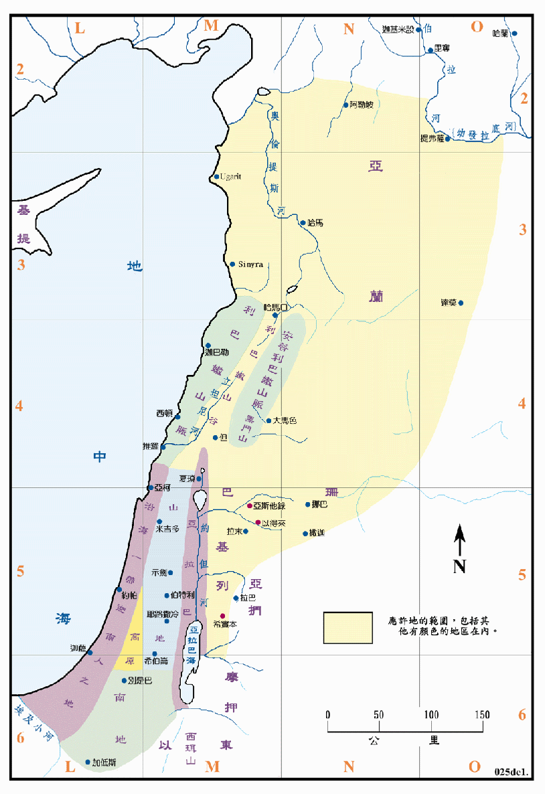

行动线说明
| 圣经 | 说明 |
|---|---|
| 申1:1-2 | 意思不明确，无法绘出。 |
| 申1:4 | 征服两个亚摩利王之事，已绘在<民图03>中。 |
| 申1:7，11:24 | 应许之地的范围。 |
本图主要表示摩西在临终前，两次所述应许地之范围。其中所指的「亚拉巴、山地、高原、南地、和沿海一带迦南人的地」，它们的位置和范围都很明显，已在图中绘出并着色，至於从利巴嫩山到伯拉大河地区，因东界的说明不够，本图则是按民数记卅四章7至11节的说明所绘。此外也未提到巴珊和基列两地区，因当时以色列人已经占有，并且分给了河东的两个半支派为业，故也一并绘入。此次所应许的面积比在民卅四章中所述者更大，只有在所罗门王的时代中才有如此大之领土。